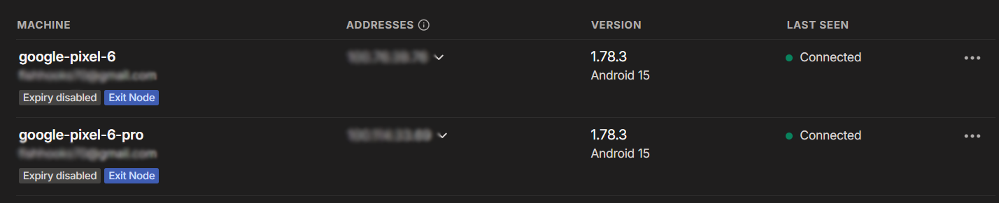

Tailscale Containerized as network_mode
Introduction
The network_mode flag in Docker allows you to specify the networking mode for a container. The use cases for this are extensive. For my use case, I wanted to pass in a phone’s LTE network as a way to have a second public IP address for another docker service. The objective is to have two containers. One being the Tailscale container (configured in compose.yaml) and the container we want to set network_mode: “service:tailscale” as. In this post, we will explore how to run Tailscale containerized as another service’s network_mode.
Pre-requisites
- Docker with Docker Compose installed
- A Tailscale account with auth keys
- TUN device accesible with nesting enabled on the host
Tailscale Admin Console
Before creating the container, lets take a look at the Tailscale admin console. The admin console will show the “machines” that are connected to the Tailnet. For android devices acting as exit nodes, you will need to tick the “Use as exit node” box under “Edit route settings”. This is not something that can be done within the Tailscale app.

Container Preparation
Still in the admin console, we need to get the Tailscale address of the machine to route traffic through. We also need to generate an auth key. This key will be used to authenticate the container without an interactive login. To do this, head to Settings -> Personal Settings -> Keys. Generate the key with the options that best suit your security needs. Also, remember to copy the full key as it will not be shown again.
Containerized Tailscale
Now we will create the compose.yaml file. This file will contain the configuration for our Tailscale container. While the command: flag is optional, it simplifies our setup by telling the container which Tailscale address and auth key to use. If you are not using an exit node, then you will have to tell the container which node to use. For a more detailed look at the Tailscale docker image, refer to this official guide.
#####################################
# Tailscale Container
#####################################
tailscale:
image: tailscale/tailscale:latest
container_name: tailscale
environment:
- TS_AUTHKEY=<YOUR_AUTH_KEY>
cap_add:
- NET_ADMIN
- SYS_MODULE
privileged: true
restart: unless-stopped
volumes:
- /var/lib/tailscale:/var/lib/tailscale
- /dev/net/tun:/dev/net/tun
command: >
tailscaled --state=/var/lib/tailscale/tailscaled.state --socket=/var/run/tailscale/tailscaled.sock &&
tailscale up --authkey=<YOUR_AUTH_KEY>
--exit-node=<EXIT_NODE_TS_IP>
--exit-node-allow-lan-access
--accept-dns=true
Second Container
Yay! We are now able to set the network_mode flag in a second container to “service:tailscale” to route traffic through the Tailscale container. Once the tailscale container is built, you can run the following command to view the status of your connected nodes.
docker exec tailscale tailscale status
network_mode: "service:tailscale"
depends_on:
- tailscale
To take it a step further, I recommend looking into the Headscale project. This project allows you to self-host the Tailscale control plane.
Thanks for reading! 🎉